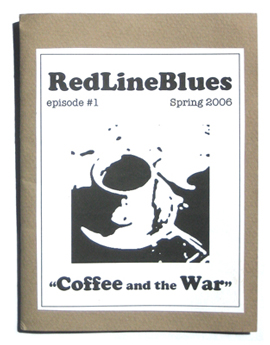

[Sold out.]
Red Line Blues 1: Coffee and the War
Spring 2006
32 pages
4.5" x 6"
Edition of 200
Steve Norris — Grafenwohr
Chris Cleveland — 11:05 a.m.
Ben Yanes — Charlie’s Coffee
Anna Belle Peevey — Nescafé
Andrea Salsedo — Black Coffee
James S. Corrigan — Perched
Jessie Grace Eller-Isaacs — Agusto
James Chiappetta — Beachhead
Sam Yanes — Beacon Times
Lisa Freedman — Freedom Isn’t Free
Ken Becker — Art House Flop
Moriah Norris-Hale — Pan-Pan Coffee
Lucy Tobin — Christmas